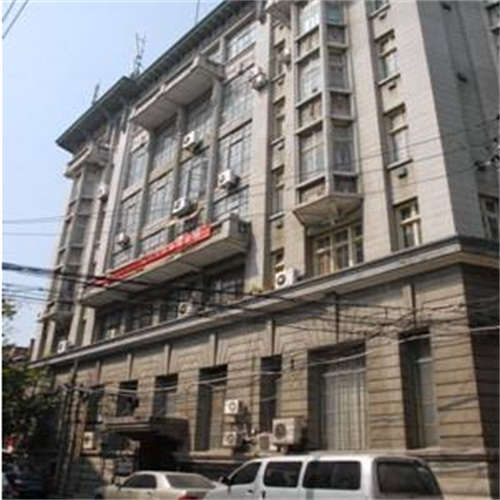

所在街区：江岸区鄱阳街49号 建筑风格：古典主义 建造年代：1911年 现存情况：商用

圣教书局地处鄱阳街49号，1911年始建，为三层混合结构房屋。解放前为圣教书局，当时中国70%的圣经均由圣教书局进行印刷出版。圣教书局为武汉市第四批优秀历史保护建筑，保护等级为二级。。对于圣教书局修缮，主要在于恢复其往昔的风貌和品味，向市民展示20世纪初武汉古典主义风格建筑的兴盛状态。因此，圣教书局外立面、室内空间，均按古典主义风格进行修缮。同时，圣教书局的修缮，遵循了"完整性、真实性、可逆可识别性"三大原则，充分保护建筑原存部位历史原貌，不改变原状。设计单位多次现场勘察、研究分析史料，对比同时期、同类型的建筑，反复考证建筑外立面色彩、材质等重要历史信息。经现场层层剥除粉刷，判断一层原貌为浅灰色麻石立面；通过剥离后的西立面元宝缝、北立面三角形底缝等历史痕迹，以及顾问公司在YALE大学图书馆查阅到的历史图纸，确定2-3层原貌为清水红砖。
除清水红砖再勾元宝缝的特殊工艺外，包括对室内木质构件的保存修复、天井和平屋面的恢复等等，无数细部环节，武汉华发均组织了设计单位，提出了详尽的修缮技术措施。